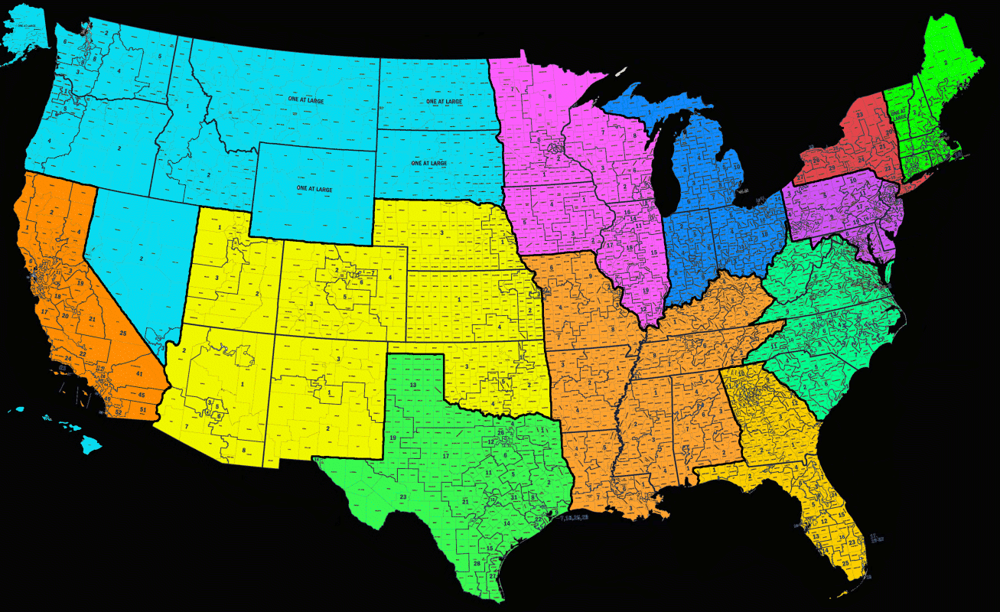

Welcome to the Web-Page of
the Organic Body-Politic of "the People of the USA";
"Organized" for Purposes of "Responsible Self-Governing", under:
Traditional Anglo-American & Biblical Principles of Common-Law & Republicanism.
